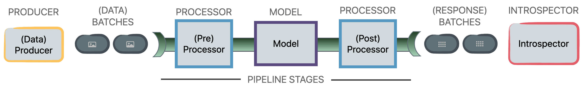
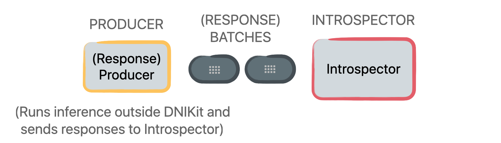

Load a model#
DNIKit supports loading models from frameworks using built-ins for TensorFlow (v1 + v2) and Keras, or from other model types using custom loading (see below in “Other Scenarios”).
TensorFlow and Keras#
To connect TensorFlow or Keras models with DNIKit, there are two built-in
functions available in the dnikit_tensorflow package:
load_tf_model_from_path
or load_tf_model_from_memory.
Models from these frameworks are loaded into DNIKit as dnikit.base.Model objects.
To load from a file path:
from dnikit_tensorflow import load_tf_model_from_path
dni_model = load_tf_model_from_path("/path/to/model")
Models can also be loaded if the model or graph is currently in memory.
For TF2 models, load the model and use parameter model:
from dnikit_tensorflow import load_tf_model_from_memory
tf2_model = ... # grab the TF2 model
dni_model = load_tf_model_from_memory(model=tf2_model)
For TF1, grab the current session and pass in with parameter session:
from dnikit_tensorflow import load_tf_model_from_memory
tf1_session = ... # get current Session here
dni_model = load_tf_model_from_memory(session=tf1_session)
Other scenarios#
For other frameworks, data can be fed through a model outside of DNIKit, where model responses
are extracted and then set up in a Producer (explained in the next
section) to produce Batches of model responses. This
model response producer
will be passed into a DNIKit introspector’s introspect() method.
When using this setup, inference can also be run only once by caching model responses in advance,
say in a Pandas DataFrame or pickle, and then by creating a Producer
that pulls batches of data from the cache. Alternatively, responses from a model can also be
cached in DNIKit directly.
Note
DNIKit introspectors only need model responses —i.e., outputs from performing inference on data, from intermediate or final layers —to work; they do not need to access the model directly.
See below for an illustrative comparison between typical pipelines and producing responses outside
DNIKit and feeding directly to an Introspector.
TYPICAL
PRODUCE RESPONSES
Next Steps#
After loading a model into DNIKit, the next step is
to load data
so that a pipeline can be set up, which feeds data
into the DNIKit model. Learn more in the next section.